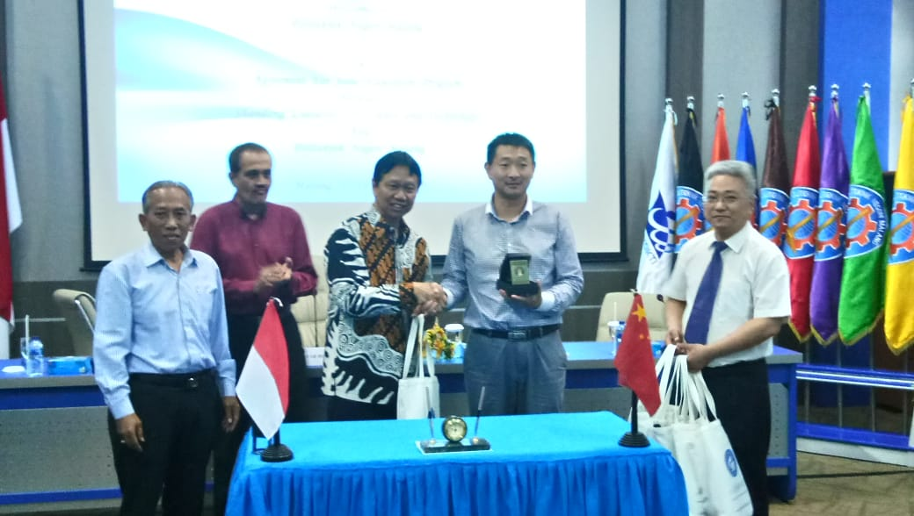

ABOUT
Politeknik Negeri Malang awalnya bernama Politeknik Universitas Brawijaya, berdiri pada tahun 1982 berdasarkan Surat Keputusan Presiden No. 59/Tahun 1982.
Politeknik Universitas Brawijaya berkedudukan di Kota Malang, Provinsi Jawa Timur dan merupakan salah satu dari 6 Politeknik perintis berdasarkan Surat Keputusan Direktur Jenderal Pendidikan Tinggi No.115/DIKTI/KEP/1984.
Perubahan nama Politeknik Universitas Brawijaya menjadi Politeknik Negeri Malang (POLINEMA) didasarkan pada Surat Keputusan Menteri Pendidikan Nasional Nomor 147/O/2004 tanggal 22 November 2004.
Pada awal berdiri Politeknik Universitas Brawijaya memiliki empat jurusan, yaitu Jurusan Teknik Elektronika, Jurusan Teknik Listrik, Jurusan Teknik Mesin, dan Jurusan Teknik Sipil.
Seiring dengan perkembangan industri dan pembangunan nasional di Indonesia, pada tahun 1986 dibuka Jurusan Teknik Telekomunikasi, Jurusan Akuntansi, dan Jurusan Kesekretariatan.
Setahun berikutnya, yakni tahun 1987 dibuka Jurusan Teknik Kimia. Politeknik Universitas Brawijaya merupakan lembaga pendidikan profesional, pada awalnya dibantu oleh tenaga ahli dari Swiss yang tergabung dalam Swiss Contact dan bertindak sebagai Technical Assistant bersama dengan beberapa tenaga ahli dari Indonesia yang telah mendapat pendidikan khusus di Pusat Pengembangan Pendidikan Politeknik Bandung.
Khusus untuk Jurusan Akuntansi dan Jurusan Administrasi Niaga mendapatkan bantuan dari The Australian Project. Berdasarkan Surat Keputusan Menteri Pendidikan dan Kebudayaan Nomor 0313/O/1991
Masa pendidikan program Diploma III (Ahli Madya) di Politeknik Negeri Malang adalah 3 tahun atau 6 semester, dengan rincian 5 semester kuliah di kampus dan 1 semester terakhir digunakan untuk praktik kerja lapangan (PKL) dan penyelesaian laporan akhir studi. Masa pendidikan program Diploma IV (Sarjana Sains Terapan) adalah 4 tahun atau 8 semester, dengan rincian 7 semester kuliah di kampus dan 1 semester terakhir digunakan untuk praktik kerja lapangan (PKL) dan penyelesaian skripsi. Setiap semester berlangsung selama 19 minggu efektif yang terbagi dalam 17 minggu tatap muka, 1 minggu ujian tengah semester (UTS), 1 minggu ujian akhir semester (UAS) dengan beban berkisar 38 jam kuliah tiap minggu (1 jam tatap muka selama 45 menit), sehingga total jam untuk D-III selama 3 tahun adalah 4.332 jam yang setara dengan 110-120 SKS dan untuk D-IV selama 4 tahun adalah 5.776 jam yang setara dengan 144-160 SKS. Komposisi jumlah jam kuliah untuk D-III dan D-IV sekitar 45 % teori dan 55 % praktik. Program alih jenjang dari Diploma III ke Diploma IV masa pendidikan selama 3 semester. Setiap semester berlangsung selama 19 minggu efektif, dengan beban 38 jam kuliah tiap minggu, sehingga total jam selama masa pendidikan adalah 2.166 jam yang setara dengan 34-50 SKS. Adapun untuk program alih jenjang dari Diploma I dan Diploma II ke jenjang Diploma III atau Diploma IV serta bagi mahasiswa pindahan diatur dengan Surat Keputusan Direktur. Pendidikan di POLINEMA menggunakan sistem paket yang mewajibkan mahasiswa menempuh seluruh mata kuliah yang diprogramkan.
Gallery

Card title
This is a longer card with supporting text below as a natural lead-in to additional content. This content is a little bit longer.
Last updated 3 mins ago

Card title
This card has supporting text below as a natural lead-in to additional content.
Last updated 3 mins ago

Card title
This is a wider card with supporting text below as a natural lead-in to additional content. This card has even longer content than the first to show that equal height action.
Last updated 3 mins ago
Contact Us
Card title
Some quick example text to build on the card title and make up the bulk of the card's content.
Go somewhere